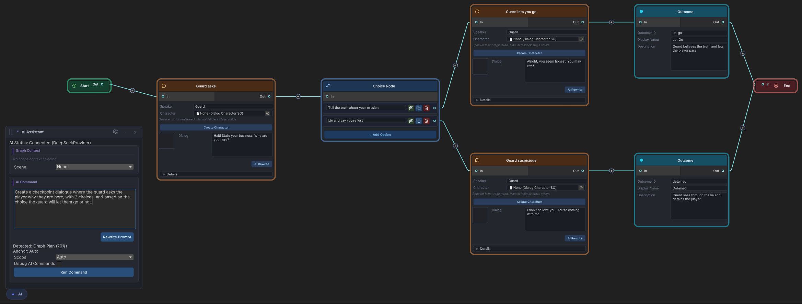
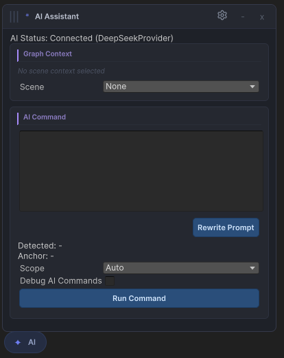

Getting Started
Dialogue Graph AI Extension is an optional editor-side add-on. It sits on top of Dialogue Graph System, relies on AI Providers for the actual transport layer, and is currently opened through the floating AI Assistant panel.
What must already exist
- Dialogue Graph System imported and compiling.
- AI Providers imported if you want real provider-backed requests.
- The compile define
BEKA_FORGE_DGS_AI_EXTENSION_READY_V3present so the editor-side AI surfaces compile in.
Core assemblies and location
| Area | Value |
|---|---|
| Runtime assembly | DialogSystemAIExtension.Runtime |
| Editor assembly | DialogSystemAIExtension.Editor |
| Root folder | Assets/DialogSystemAIExtension/ |
| Main shared settings asset | DialogAISettings in a Resources folder |
First-time setup flow
- Open a
DialogGraphasset in the Dialogue Graph System editor. - Open the floating AI Assistant panel from the graph editor AI launcher.
- Open the AI settings panel if no provider is configured yet.
- Select or create a provider asset through the AI Providers tooling.
- Store the provider API key locally on the current machine.
- Return to the graph editor and run a narrow preview-first command such as rewrite or grammar fix.
Settings model: local plus shared
The extension uses two layers intentionally. Local authoring preferences, selected provider GUID, prompt sections, and debug flags live in EditorPrefs. Shared defaults and graph plan safety caps live in the project asset DialogAISettings.
using DialogSystemAIExtension.Runtime.ScriptableObjects;
var settings = DialogAISettings.LoadFromResources();
if (settings == null)
{
Debug.LogWarning("Create a DialogAISettings asset in a Resources folder.");
}Where the feature shows up in the editor
Command surface

The panel combines prompt entry, detected route, scope, and preview-first command execution in one place.
Floating AI Assistant panel

The floating panel stays attached to the editor workflow without taking ownership away from Dialogue Graph System.
Conservative first command
Start with a single-node rewrite or grammar fix. These routes exercise provider setup, prompt building, response parsing, and preview apply without immediately invoking the broader graph operation plan pipeline.